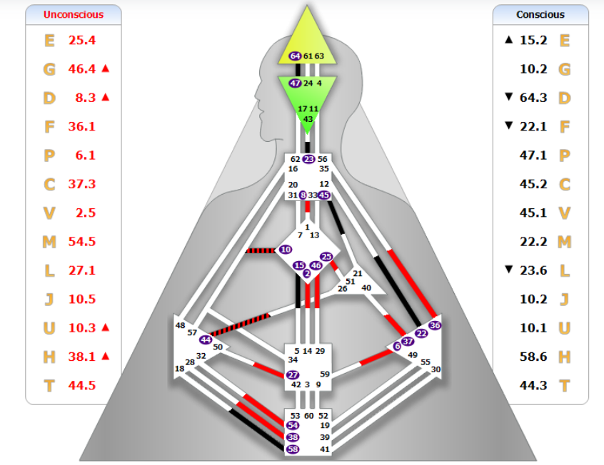

Vuoi aumentare il fatturato?
Team engineering, allineamento chimico delle risorse e rimozione dei colli di bottiglia operativi.
Sì, lo voglio →Consulenza Strategica per Aziende e Leader
“L’allineamento perfetto tra talento individuale e fatturato aziendale. Trasformiamo l’energia del capitale umano in risultati finanziari misurabili.”

Il metodo
Il sistema BG5® analizza le dinamiche nascoste che limitano la crescita del tuo business. Trasformiamo le inefficienze in metriche oggettive per costruire team ad alte performance e leader carismatici.
Team engineering, allineamento chimico delle risorse e rimozione dei colli di bottiglia operativi.
Sì, lo voglio →Strumenti per C-Levels e Founder per prendere decisioni strategiche corrette secondo il proprio disegno.
Sì, voglio essere un buon leader →Corporate analysis per mappare talenti e conflitti dormienti, riducendo drasticamente il turnover.
Sì, voglio migliorare la vita del mio team →Approfondimenti
24 articoli pratici di Human Design applicato al business. Scegli il cluster più rilevante per il tuo contesto.
HR e Recruiting
Founder e C-Level
Team Manager
Professionisti e Freelance
Soci e Business Owner
Prenota una call esplorativa per capire come le metriche BG5® possono ottimizzare il tuo business.